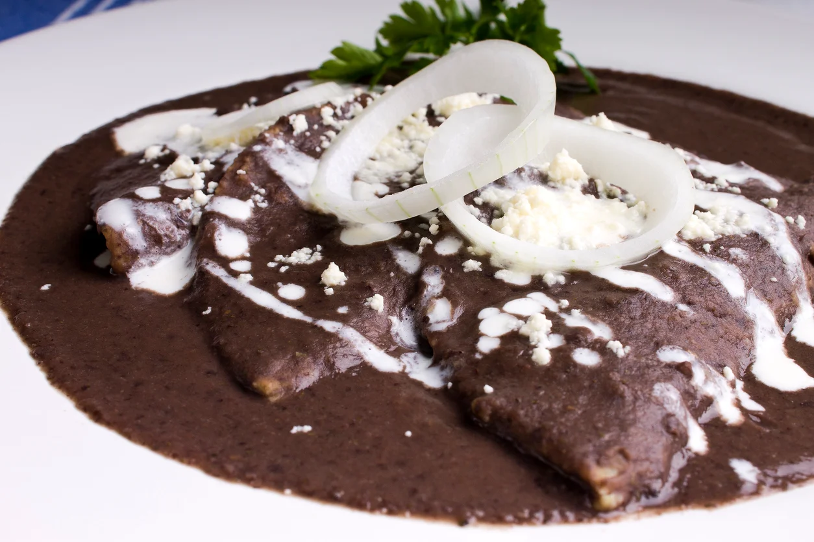

Enfrijoladas

Las enfrijoladas son un platillo mexicano elaborado a base de dos ingredientes esenciales en su gastronomía: tortillas de maíz y frijoles. Generalmente se fríe la tortilla y luego se sumergen en un caldo espeso de frijoles molidos, enrolladas o dobladas. Se sirven con queso, cebolla y crema.
Ingredientes
- 8 tortillas
- 4 tazas de frijoles cocidos
- 1 ramita de epazote
- 1 rebanada de cebolla cortada en tiras
- 1 de taza de crema
- 1 de taza de queso fresco rallado
- 1 aguacate
- Aceite, el necesario
Preparación
- Fríe la cebolla en un poco de aceite. Licua con los frijoles y el epazote, regresa a la sartén, calienta a fuego bajo hasta que burbujeen y apaga.
- Mientras, fríe las tortillas en un poco de aceite y báñalas con frijoles. Sírvelas con crema, aguacate y queso.